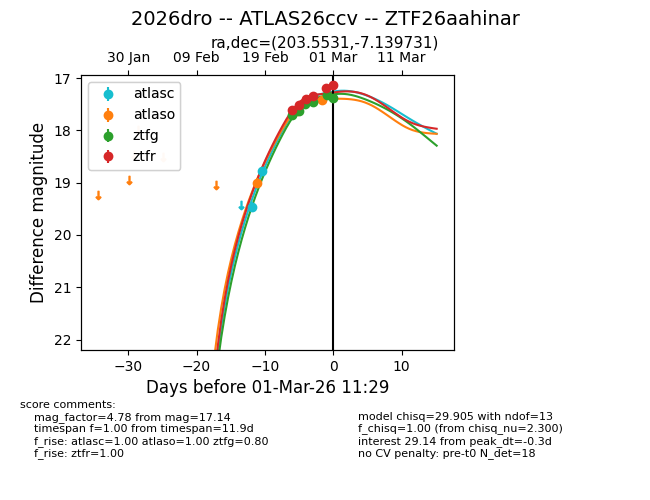
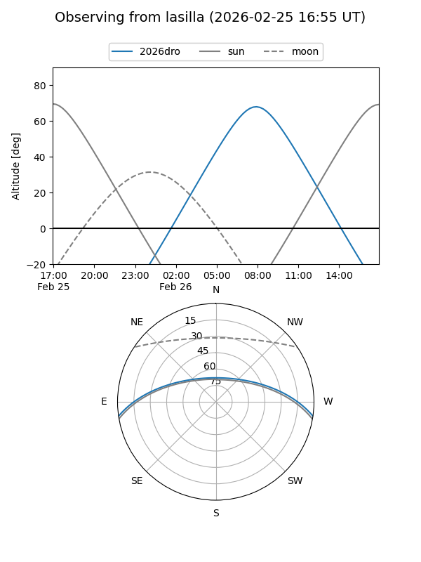
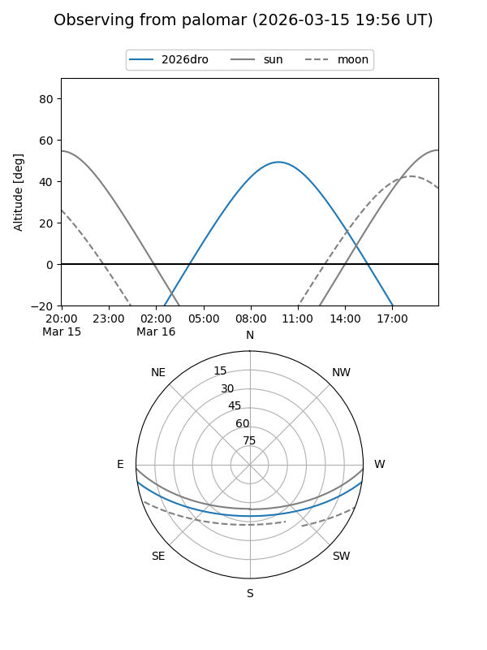
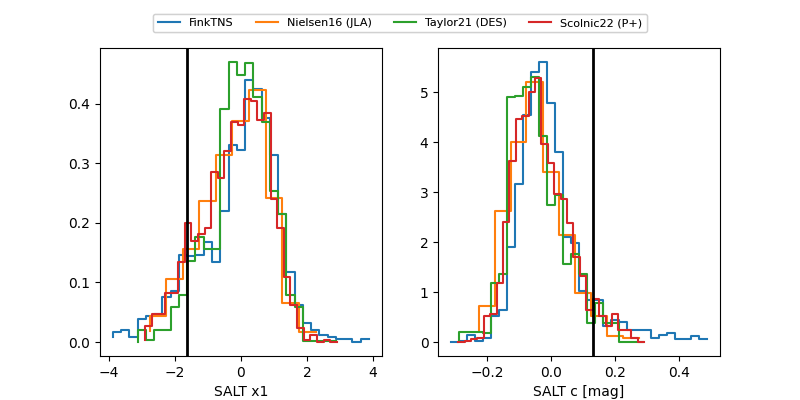

2026dro
Target 2026dro at 2026-03-01 11:30
Aliases and brokers:
FINK: link
Lasair: link
ALeRCE: link
TNS: link
YSE: link
alt names
ZTF26aahinar (ztf,fink_ztf)
2026dro (tns,yse)
ATLAS26ccv (atlas)
Coordinates:
equatorial (ra, dec) = 203.5531,-7.13973
equatorial (HMS+DMS) = 13:34:12.74,-07:08:23.03
galactic (l, b) = (321.2786,+54.20128)
Flags:
Photometry:
last atlasc=17.67, atlaso=17.42, ztfg=17.38, ztfr=17.14
3 atlasc, 3 atlaso, 6 ztfg, 6 ztfr detections
Lightcurve

Visibility


Additional plots
